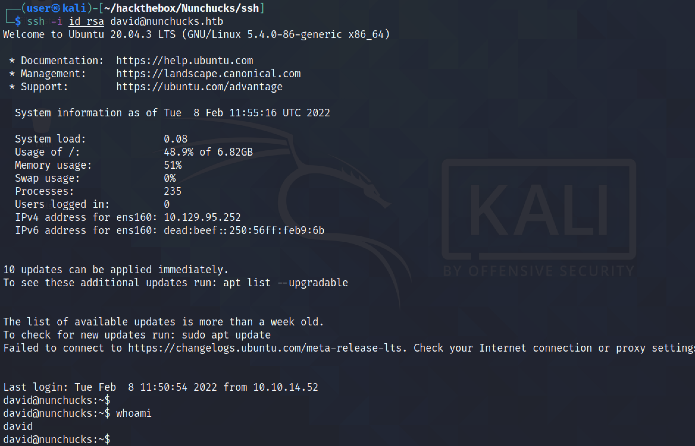

March 2, 2022
In this tutorial, we will see how to exploit SSTI (Server-Side Template Injection) vulnerability on the Nunjucks template engine and gain remote code execution. This and this page contains more information about this vulnerability.
This is the main page of the web application that we will be hacking.
If we send our web traffic through Burp Suite then we can see that the target server is running "nginx/1.18.0" on an Ubuntu box.
Another way of getting information on the target server is by running the curl tool. The --head option retrieves the response headers from the web server. The -k option "allows insecure server connections when using SSL".
Let's enter a random email address in the input box to subscribe to the newsletter.
We can see that the web application accepted our email address.
Let's resend our request and capture it in Burp Intercept. Once the request is captured, we can right-click on it and send it to Burp Repeater.
This is how a normal response looks like.
We add "{{7*7}}" to the email address and see "49" in the response. This shows that injection is possible.
Let's inject our payload that runs the id command. We can see that the command is executed successfully and the output gets returned back to us in the response.
We can also output the contents of a file. In this case, we can see the contents of the "/etc/passwd" file.
This command generates SSH keys (a public and a private one).
The one with the ".pub" extension is the public key which we will upload to the target server.
We need to create a ".ssh" directory in the user's home directory which is "/home/david". We will be uploading the public key to this directory.
This shows the contents of the public key.
We are echoing the public key into a file called "authorized_keys" which is in the "/home/david/.ssh/" directory.
We can see that the file was created successfully.
We modify the permissions of the file to only allow read and write to the owner.
Finally, we can see that we have successfully logged into the target server using the private key.
You can follow me on Twitter 0xmaCyberSec.